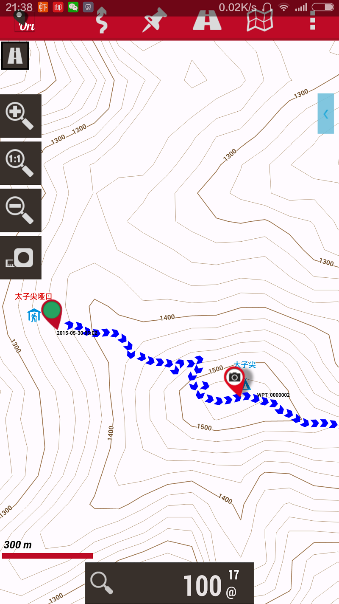

[转寄/推荐][转贴][删除][修改][设置可RE属性][上一篇][返回讨论区][下一篇][回文章][同主题列表][同主题阅读][从这里展开]
发信人: hemind(TD), 信区: outdoor 标 题: 安卓导航方案,oruxmaps+openandromaps 发信站: 饮水思源 (2015年09月11日22:09:22 星期五) 导航对户外出行的重要性不必多说,四年前还穿着休闲鞋去武功山的我却傻傻地用600元买 了第一部手持机garmin etrex h.大瓦山,七藏沟,没有它当时也许就不会去了吧. 虽然不是每个人都有gps手持机,但是手机总会有吧,手机导航对于周末两天的出行还是够用 的.下面是我的手机导航使用方案,和大家分享一下,但我不会非常详细,不会是软件的使用 说明,软件自己用用就会了. 软件使用有问题先看manual 1.安装oruxmaps软件 2.下载openandromaps离线等高线地图和皮肤文件,放到对应文件夹(mapfiles和mapstyles ) 这里是介绍和下载方法: http://www.allchinatrip.com/index.php?m=topic&a=detail&tid=13439 好像打不开?用百度搜"可用于OruxMaps的openandromaps离线等高线地图",再用快照. 曾经都是自己做离线地图,体积大不说,每次做地图都要花好多时间. 国内的openandromaps我都下载下来了，放到网盘里大家可以去下载 http://pan.baidu.com/s/1kTneMMj 3.软件准备好了,出行前找好航迹存入手机,加载后便可以开始导航了 找航迹我推荐六只脚和wikiloc http://www.foooooot.com/ http://zh-cn.wikiloc.com/wikiloc/home.do 推荐大家用wikiloc上传自己的航迹,这时我的 http://zh-cn.wikiloc.com/wikiloc/user.do?id=668936 最后是几张软件截图  screen.width - 200){this.width = screen.width - 200}"> |
[转寄/推荐][转贴][删除][修改][设置可RE属性][上一篇][返回讨论区][下一篇][回文章][同主题列表][同主题阅读][从这里展开]